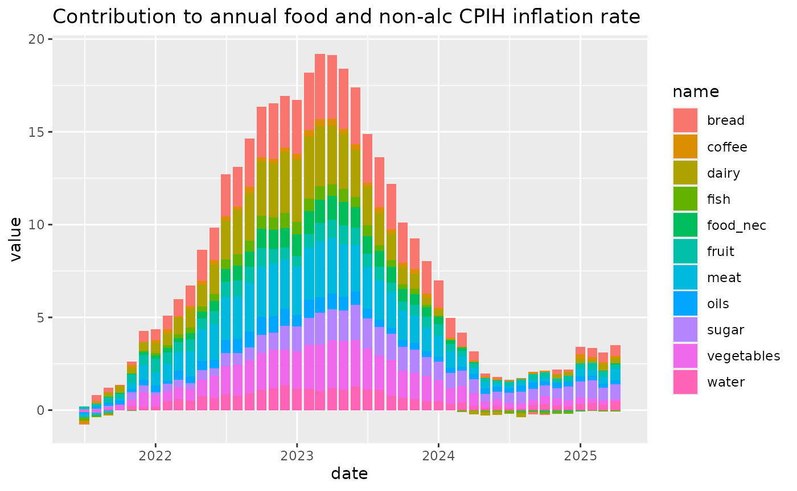
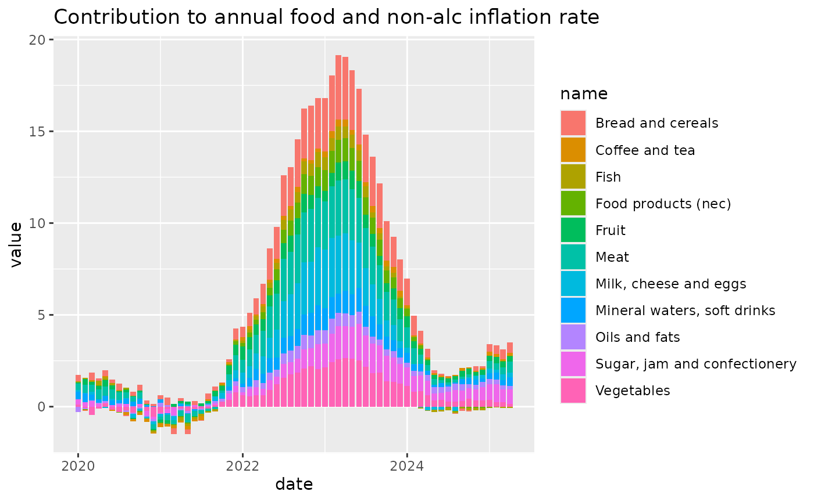

Calculating contribution to annual rate
contribution.RmdIntroduction
mm23 contains functions to reproduce the calculation of an items contribution to its parents annual inflation rate. These are quite niche, and rely on the data being in a specific structure. Theres no real error checking in here (yet) so take care!
This article will explain the steps needed to reproduce the calculation.
Weights
CPIH weights are a problem. They are adjusted twice a year (since
2017), in December and January. But the mm23 dataset only has a single
weight for each year. The only place the full weights are exposed are in
the ‘detailed reference tables’ spreadsheet. The functions
get_cpi*_weights() which generates a weights dataset.
It may not be very robust, it needs some testing, but if everything
is in the right place it works OK.
It returns a dataset with a weight for every month.
Unchaining and calculating contribution
The unchain() function can be used within a
mutate() call to produce an unchained index. Its based on
the assumption that CPI weights change twice a year, and so an unchained
index is based on previous January = 100, or for the January index,
based on previous December = 100. Example code below.
Calculating contribution to ‘all items’ 12 month rate
The calculation is as follows, where:
\(c = component\ c\)
\(a =\ 'all\ items'\ CPI\ index\)
\(W^c_{y} = weight\ of\ component\ c\ in\ year\ y\) \(I^c_t = index\ for\ component\ c\ in\ month\ t\ based\ on\ January\ of\ current\ year =100\) \(I^a_{Jan} = all\ items\ index\ for\ January\ based\ on\ previous\ month\ (December) = 100\) \(I^a_{Dec} = all\ items\ index\ for\ December\ based\ on\ previous\ January = 100\)
\[ (\frac{W^c_{y-1}} {W^a_{y-1}}) \times (\frac{({I^c_{Dec}} - {I^c_{t-12}})}{I^a_{t-12}}) \times 100 \ \ +\ \ (\frac{W^c_y}{W^a_y}) \times (\frac{({I^c_{Jan}}-100)}{I^a_{t-12}}) \times I^a_{Dec} \ \ +\ \ (\frac{W^c_y}{W^a_y}) \times (\frac{(I^c_t - 100)}{I^a_{t-12}}) \times \frac{I^a_{Jan}}{100} \times I^a_{Dec} \]
Note that ‘all items’ doesn’t have to be all items CPIH, it can be a category total (such as food). It is important that the calculations are performed using unchained indices (i.e. based on previous January = 100, or for the January index, based on previous December =100). For the month of interest, the contribution of each component of the CPI to the 12-month rate is calculated. The same is done for the preceding month. The differences between the two are the contributions to the change in the CPI 12-month rate.
The contribution() function applies this calculation to
a wide dataset (1 column with month number or date, and the indices and
weights in subsequent columns). It can then be used in a
mutate() call. It takes \(I^a\), \(W^a\), \(I^c\), and \(W^c\) as parameters, and leverages
dplyr::lag() to do the rest. Example below.
CPIH food weight contribution
Code to calculate the contribution to changes in food and non-alcoholic drinks inflation.
library(mm23)
library(dplyr)
library(tidyr)
library(lubridate)
library(ggplot2)
# Get our data together
mm23 <- acquire_mm23()
data <- get_mm23_month(mm23)
wts <- get_cpih_weights()
# Select and unchain food indices
food_cdids <- c("L523", "L52I", "L52J", "L52K",
"L52L", "L52M", "L52N", "L52O",
"L52P", "L52Q", "L52S", "L52T")
food_unchained <- data |>
filter(cdid %in% food_cdids & date >= "2017-01-01") |>
group_by(cdid) |>
mutate(unchained_value = unchain(month(date), value)) |>
select(date, cdid, value = unchained_value)
# Extract the relevant food weights
food_weights <- c("L5CZ", "L5DH", "L5DI", "L5DJ",
"L5DK", "L5DL", "L5DM", "L5DN",
"L5DO", "L5DP", "L5DR", "L5DS")
foodwts <- wts |>
filter(cdid %in% food_weights & date >= "2017-01-01" & date <= "2023-03-01")
# Combine the indices and weights and calculate the contribution to annual rate
unchained <- food_unchained |>
bind_rows(foodwts) |>
pivot_wider(names_from = cdid)
contribution <- unchained |>
mutate(bread = contribution(month = month(date),
all_items_index = L523,
all_items_weight = L5CZ,
component_index = L52I,
component_weight = L5DH),
meat = contribution(month = month(date),
all_items_index = L523,
all_items_weight = L5CZ,
component_index = L52J,
component_weight = L5DI),
fish = contribution(month = month(date),
all_items_index = L523,
all_items_weight = L5CZ,
component_index = L52K,
component_weight = L5DJ),
dairy = contribution(month = month(date),
all_items_index = L523,
all_items_weight = L5CZ,
component_index = L52L,
component_weight = L5DK),
oils = contribution(month = month(date),
all_items_index = L523,
all_items_weight = L5CZ,
component_index = L52M,
component_weight = L5DL),
fruit = contribution(month = month(date),
all_items_index = L523,
all_items_weight = L5CZ,
component_index = L52N,
component_weight = L5DM),
vegetables = contribution(month = month(date),
all_items_index = L523,
all_items_weight = L5CZ,
component_index = L52O,
component_weight = L5DN),
sugar = contribution(month = month(date),
all_items_index = L523,
all_items_weight = L5CZ,
component_index = L52P,
component_weight = L5DO),
food_nec = contribution(month = month(date),
all_items_index = L523,
all_items_weight = L5CZ,
component_index = L52Q,
component_weight = L5DP),
coffee = contribution(month = month(date),
all_items_index = L523,
all_items_weight = L5CZ,
component_index = L52S,
component_weight = L5DR),
water = contribution(month = month(date),
all_items_index = L523,
all_items_weight = L5CZ,
component_index = L52T,
component_weight = L5DS)
)
head(contribution) |> knitr::kable()| date | L523 | L52I | L52J | L52K | L52L | L52M | L52N | L52O | L52P | L52Q | L52S | L52T | L5CZ | L5DH | L5DI | L5DJ | L5DK | L5DL | L5DM | L5DN | L5DO | L5DP | L5DR | L5DS | bread | meat | fish | dairy | oils | fruit | vegetables | sugar | food_nec | coffee | water |
|---|---|---|---|---|---|---|---|---|---|---|---|---|---|---|---|---|---|---|---|---|---|---|---|---|---|---|---|---|---|---|---|---|---|---|---|
| 2017-01-01 | NA | NA | NA | NA | NA | NA | NA | NA | NA | NA | NA | NA | 81 | 12 | 16 | 3 | 9 | 2 | 7 | 10 | 10 | 2 | 3 | 7 | NA | NA | NA | NA | NA | NA | NA | NA | NA | NA | NA |
| 2017-02-01 | 100.8147 | 101.9388 | 100.4158 | 104.5908 | 100.6250 | 100.68160 | 101.2846 | 102.2845 | 96.84418 | 102.3279 | 104.1874 | 99.48613 | 81 | 12 | 16 | 3 | 9 | 2 | 7 | 10 | 10 | 2 | 3 | 7 | NA | NA | NA | NA | NA | NA | NA | NA | NA | NA | NA |
| 2017-03-01 | 101.1202 | 102.3469 | 100.5198 | 104.5908 | 102.2917 | 103.40798 | 102.4704 | 102.4922 | 97.23866 | 102.3279 | 103.1904 | 98.04728 | 81 | 12 | 16 | 3 | 9 | 2 | 7 | 10 | 10 | 2 | 3 | 7 | NA | NA | NA | NA | NA | NA | NA | NA | NA | NA | NA |
| 2017-04-01 | 101.3238 | 103.1633 | 101.3514 | 103.2934 | 101.4583 | 96.68939 | 102.2727 | 102.5961 | 98.52071 | 102.0243 | 104.7856 | 98.35560 | 81 | 12 | 16 | 3 | 9 | 2 | 7 | 10 | 10 | 2 | 3 | 7 | NA | NA | NA | NA | NA | NA | NA | NA | NA | NA | NA |
| 2017-05-01 | 101.4257 | 102.5510 | 101.0395 | 105.5888 | 102.2917 | 99.80526 | 101.6798 | 101.4538 | 100.00000 | 102.7328 | 103.4895 | 99.28058 | 81 | 12 | 16 | 3 | 9 | 2 | 7 | 10 | 10 | 2 | 3 | 7 | NA | NA | NA | NA | NA | NA | NA | NA | NA | NA | NA |
| 2017-06-01 | 101.3238 | 102.8571 | 101.4553 | 107.6846 | 102.2917 | 102.04479 | 101.2846 | 100.5192 | 97.33728 | 101.2146 | 105.0847 | 99.58890 | 81 | 12 | 16 | 3 | 9 | 2 | 7 | 10 | 10 | 2 | 3 | 7 | NA | NA | NA | NA | NA | NA | NA | NA | NA | NA | NA |
# put the data back into tidy form and plot some results
cont <- contribution |>
select(date, bread:water) |>
pivot_longer(cols = bread:water) |>
filter(!is.na(value))
cont |>
filter(date >= "2021-07-01") |>
ggplot() +
geom_col(aes(x = date, y = value, fill = name)) +
labs(title = "Contribution to annual food and non-alc inflation rate")
CPI food weight ontribution
library(mm23)
library(dplyr)
library(tidyr)
library(lubridate)
library(ggplot2)
# Get our data together
mm23 <- acquire_mm23()
data <- get_mm23_month(mm23)
wts <- get_cpi_weights()
# Select and unchain food indices
food_cdids <- c("D7BU",
"D7D5",
"D7D6",
"D7D7",
"D7D8",
"D7D9",
"D7DA",
"D7DB",
"D7DC",
"D7DD",
"D7DE",
"D7DF")
food_unchained <- data |>
filter(cdid %in% food_cdids & date >= "2017-01-01") |>
group_by(cdid) |>
mutate(
unchained_value = unchain(month(date), value)
) |>
select(date, cdid, value = unchained_value)
# Extract the relevant food weights
food_weights <- c("CHZR",
"CJWB",
"CJWC",
"CJWD",
"CJWE",
"CJWF",
"CJWG",
"CJWH",
"CJWI",
"CJWJ",
"CJWK",
"CJWL")
foodwts <- wts |>
filter(cdid %in% food_weights & date >= "2017-01-01" & date <= "2023-03-01")
# Combine the indices and weights and calculate the contribution to annual rate
unchained <- food_unchained |>
bind_rows(foodwts) |>
pivot_wider(names_from = cdid)
contribution <- unchained |>
mutate(`Bread and cereals` = contribution(month = month(date),
all_items_index = D7BU,
all_items_weight = CHZR,
component_index = D7D5,
component_weight = CJWB),
`Meat` = contribution(month = month(date),
all_items_index = D7BU,
all_items_weight = CHZR,
component_index = D7D6,
component_weight = CJWC),
`Fish` = contribution(month = month(date),
all_items_index = D7BU,
all_items_weight = CHZR,
component_index = D7D7,
component_weight = CJWD),
`Milk, cheese and eggs` = contribution(month = month(date),
all_items_index = D7BU,
all_items_weight = CHZR,
component_index = D7D8,
component_weight = CJWE),
`Oils and fats` = contribution(month = month(date),
all_items_index = D7BU,
all_items_weight = CHZR,
component_index = D7D9,
component_weight = CJWF),
`Fruit` = contribution(month = month(date),
all_items_index = D7BU,
all_items_weight = CHZR,
component_index = D7DA,
component_weight = CJWG),
`Vegetables` = contribution(month = month(date),
all_items_index = D7BU,
all_items_weight = CHZR,
component_index = D7DB,
component_weight = CJWH),
`Sugar, jam and confectionery` = contribution(month = month(date),
all_items_index = D7BU,
all_items_weight = CHZR,
component_index = D7DC,
component_weight = CJWI),
`Food products (nec)` = contribution(month = month(date),
all_items_index = D7BU,
all_items_weight = CHZR,
component_index = D7DD,
component_weight = CJWJ),
`Coffee and tea` = contribution(month = month(date),
all_items_index = D7BU,
all_items_weight = CHZR,
component_index = D7DE,
component_weight = CJWK),
`Mineral waters, soft drinks` = contribution(month = month(date),
all_items_index = D7BU,
all_items_weight = CHZR,
component_index = D7DF,
component_weight = CJWL)
)
# put the data back into tidy form and plot some results
cont <- contribution |>
select(date, `Bread and cereals`:`Mineral waters, soft drinks`) |>
pivot_longer(cols = `Bread and cereals`:`Mineral waters, soft drinks`) |>
filter(!is.na(value))
cont |>
filter(date >= "2020-01-01") |>
ggplot() +
geom_col(aes(x = date, y = value, fill = name)) +
labs(title = "Contribution to annual food and non-alc inflation rate")